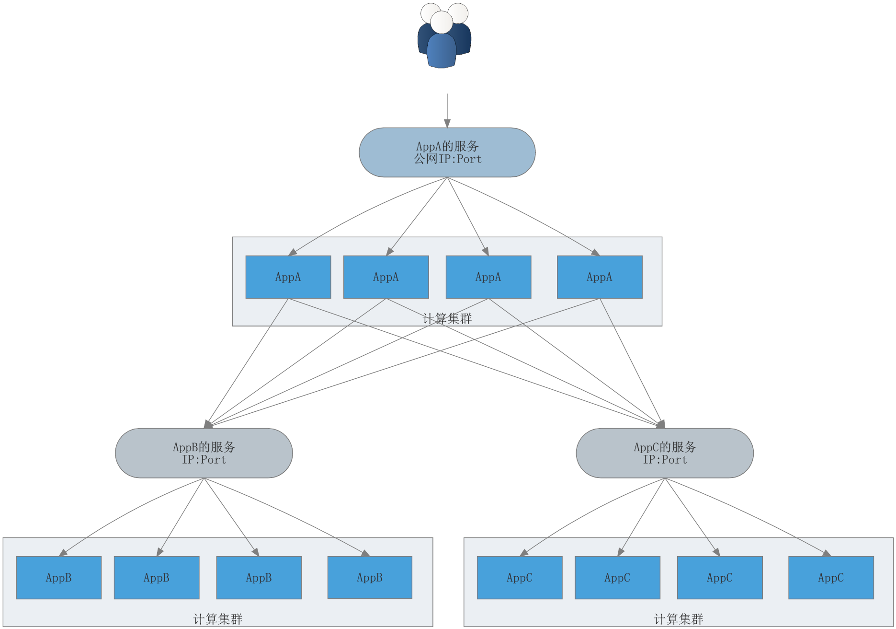

简介
YunT（云梯）是帮助个人和中小用户低价部署云端业务，简化运维和实现弹性扩展的PasS平台。
YunT用成熟运营商服务器搭建计算集群，用高可用技术搭建存储集群，用存储计算分离的模式支撑用户上传部署的云端应用，支撑常规的WEB应用、移动APP的后台应用和其它云端应用等。
YunT只做管控，云端应用依然运行在服务器提供商上。YunT计算集群采用虚拟集群管理方式，后台服务器有成熟的阿里云、百度云和腾讯云服务器，也有海外服务器（满足某些海外网络访问的需求）。在YunT 平台上，这些服务器被组织成虚拟机房，用户的云端应用在集群的统一调度下一般拥有多个副本运行在不同服务器上，单点故障不会影响用户业务系统的健康运行。
YunT上运行的是一个个应用。应用可以是一个程序，一个Web网站，也可以是个Helloword。应用有2个来源，一个是用户自己开发的应用上传到YunT（比如自己开发的爬虫应用）；另一个是从“应用中心”选择常用的应用（比如Nginx Web应用实现网站部署）。在YunT 上用户关心的是业务应用，而不是传统的服务器资源或网络资源，从而简化自己的业务的开发。
如果您是一般用户，YunT上的“应用中心”一般会有常用的按照功能分类的应用以及相关的配置说明。直接部署即可实现一些常规的需求（比如建设一个个人网站、论坛、博客）。应用中心将会不断丰富，各种新奇好玩的应用将进一步满足更多的需求。
如果您是开发者，YunT上的应用可以由任何语言编写的，在编写好应用后您只需要把应用和相关依赖包压缩、上传、部署即可运行起来，YunT会为其配置IP、端口、存储空间，从而使应用可以被外界访问。如果该应用要对公网服务（比如Web网站应用），您可以通过YunT的“服务部署”来分配公网IP和端口，在全球任何地方任何时间随时随地访问您的应用。
服务是对应用流量的封装，应用为了实现高可用和负载均衡一般一个应用会有多个副本运行在全球各地。来自公网（需要被任何用户访问的）和内网（为了安全起见只需要自己的业务系统访问的）访问服务的网络流量会按照策略（目前是轮转）转发到这些副本应用上，从而实现负载均衡和可用性。比如应用Nginx部署了服务，系统会为该服务分配公网IP，访问Nginx服务公网IP的流量会被转发到后台所有nginx 的应用上。
App架构图如下
YunT为用户的应用提供云端运行环境，它是一个PasS平台，用户只需关心应用本身，计算、网络、存储资源和运维细节由YunT管理。
YunT 后台依然运行在业内安全可靠的服务器提供商之上。但是它更进一步为用户提供了应用的管理平台，用户建设网站只需要在管理平台上点几下鼠标，上传网站页面即可部署自己的网站。
对于移动应用开发者，后台的弹性扩展和分地域的部署是一个很大的需求，YunT 的副本机制能很好满足这类需求。在YunT平台上点击鼠标即可配置应用在高峰期的运行副本数量，在高峰期过后再通过鼠标设置成常规数量。管控端会动态弹性的根据机房的负载在数秒中内启动／停止应用的副本，从而满足移动应用的用户体验。
由于YunT的计算服务器均是业内主要服务器提供商，所以YunT上运行的应用并没有限制。开发者可以开发任何自己有价值的创新应用上传运行。另外，YunT 的计算资源价格更低廉，能减少创业者和个人用户的前期投入和开发成本。
部署一个基于Nginx 的个人网站
大家常问的问题。